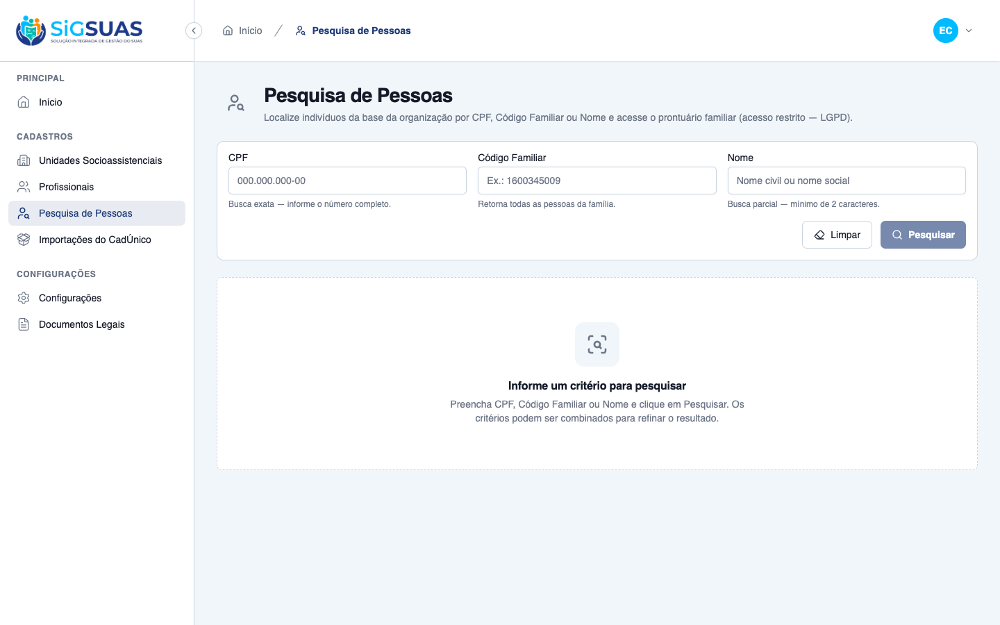
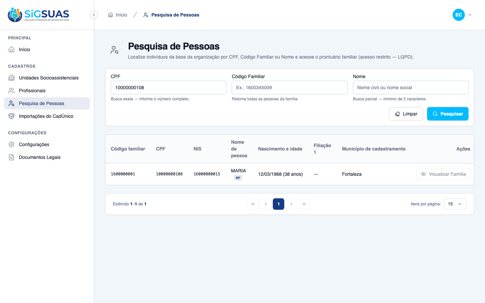
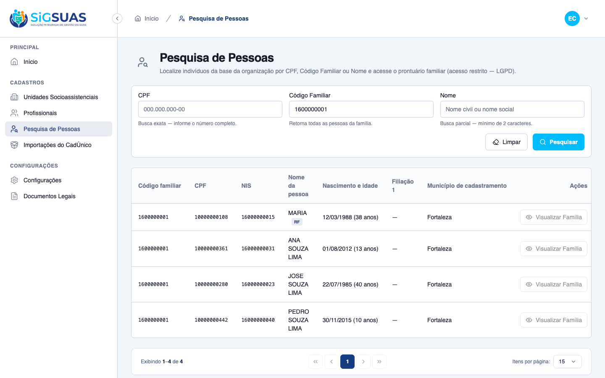
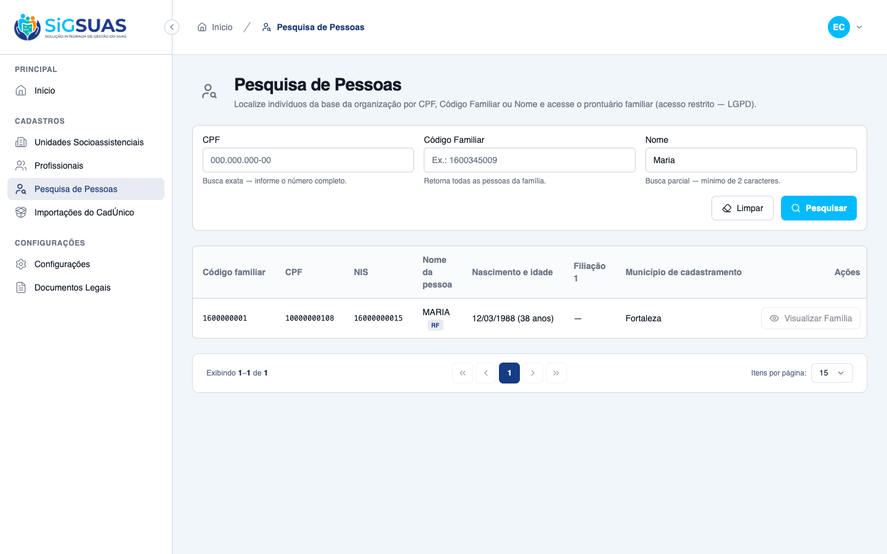
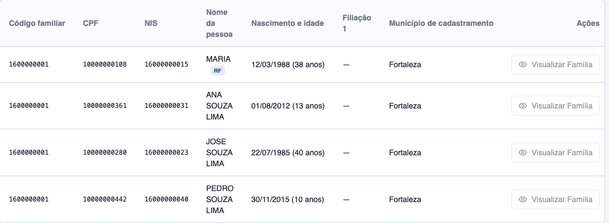

Relatório de Critérios de Aceite — Pesquisa Avançada e Localização de Pessoas
Resumo
Etapa 01 da feature Pesquisa/Privacidade: 6 dos 10 Critérios de Aceite da HU #9759 evidenciados — 5 por navegador (CA01–CA05) e 1 parcial (CA10: isolamento da busca no navegador + 404 cross-tenant e isolamento na suíte Pest). Os CAs 06–09 (bloqueio/abertura do prontuário, auditoria e revogação) dependem do endpoint de detalhe da família, cuja dona canônica é a HU #9760 (Etapa 02), e serão fechados no relatório daquela etapa. Suíte automatizada: 19 testes aprovados, 1 skip documentado (ILIKE exclusivo de PostgreSQL, coberto ao vivo no CA04). Resultado geral: todos os critérios do escopo atendidos.
| CA | Critério | Status |
|---|---|---|
| CA01 | Estado inicial limpo (RN01) | ATENDIDO · navegador |
| CA02 | Busca por CPF exato (RN02) | ATENDIDO · navegador |
| CA03 | Busca por Código Familiar (RN02) | ATENDIDO · navegador |
| CA04 | Busca por Nome parcial (RN02) | ATENDIDO · navegador |
| CA05 | Colunas de triagem por linha (RN03) | ATENDIDO · navegador |
| CA10 | Isolamento territorial da busca (RN07/RN10) | ATENDIDO · navegador + automatizado |
| CA06–CA09 | Prontuário: bloqueio, abertura autorizada, auditoria e revogação (RN04–RN06) | ATENDIDO · automatizado |
CA01 — Estado inicial limpo (RN01) ATENDIDO · navegador
Critério (Gherkin): Dado que sou um Profissional acessando o painel de consulta Quando a tela carrega Então o sistema exibe os campos de busca vazios E nenhuma listagem de pessoas aparece em tela
Como foi testado: Login como Master E2E → menu Cadastros → Pesquisa de Pessoas (/app/cadastros/pesquisa-pessoas). Nenhuma interação com os filtros.
- Os três campos (CPF, Código Familiar, Nome) carregam vazios.
- Nenhuma tabela/listagem é exibida — apenas o estado neutro "Informe um critério para pesquisar".
- O botão "Pesquisar" permanece desabilitado enquanto não houver critério (RN01).

CA02 — Busca por CPF exato (RN02) ATENDIDO · navegador
Critério (Gherkin): Dado que digito um CPF específico no campo de filtro e clico em pesquisar Quando o sistema processa a busca Então a tabela exibe apenas a linha da pessoa correspondente àquele documento
Como foi testado: Preencher o campo CPF com 10000000108 (pessoa da massa CadÚnico) e clicar em Pesquisar.
- A tabela retorna exatamente 1 linha: MARIA (nome social precede o civil, badge "RF" de Responsável Familiar), família 1600000001, NIS 16000000015, nascimento 12/03/1988 (38 anos), município Fortaleza.
- Paginação confirma "Exibindo 1–1 de 1".
- Complemento automatizado: CPF parcial é rejeitado com 422 (busca exata exige o número completo — RN02).

CA03 — Busca por Código Familiar (RN02) ATENDIDO · navegador
Critério (Gherkin): Dado que insiro um Código Familiar no campo de filtro e clico em pesquisar Quando o sistema localiza o registro Então a tabela exibe múltiplas linhas, uma para cada pessoa daquela mesma família
Como foi testado: Limpar filtros, preencher Código Familiar com 1600000001 e clicar em Pesquisar.
- A tabela exibe 4 linhas — todas da família 1600000001: MARIA (RF), ANA SOUZA LIMA, JOSE SOUZA LIMA e PEDRO SOUZA LIMA.
- Paginação confirma "Exibindo 1–4 de 4".

CA04 — Busca por Nome parcial (RN02) ATENDIDO · navegador
Critério (Gherkin): Dado que digito parte de um nome (ex: "Maria") e clico em pesquisar Quando o sistema processa a busca Então a tabela exibe todas as pessoas do município cujo nome contenha esse texto
Como foi testado: Limpar filtros, preencher Nome com Maria (minúsculas/mistas) e clicar em Pesquisar.
- A busca parcial e case-insensitive (ILIKE/PostgreSQL) localiza "MARIA" mesmo com o termo digitado em caixa mista.
- Todas as pessoas do tenant cujo nome contém o termo são listadas (1 correspondência na massa atual).
- O teste Pest equivalente fica com skip documentado em sqlite (ILIKE é PG-only) — este print em PostgreSQL real é a evidência viva do comportamento.

CA05 — Colunas de triagem por linha (RN03) ATENDIDO · navegador
Critério (Gherkin): Dado um resultado de busca com pelo menos uma pessoa Quando a tabela é renderizada Então cada linha mostra Código familiar, CPF, NIS, Nome, Nascimento e idade, Filiação 1, Município de cadastramento e a coluna de Ações
Como foi testado: Com o resultado do Código Familiar 1600000001 em tela, capturar a tabela de resultados.
- As 8 colunas da RN03 estão presentes e na ordem: Código familiar, CPF, NIS, Nome da pessoa, Nascimento e idade, Filiação 1, Município de cadastramento e Ações.
- Idade calculada e exibida junto ao nascimento (ex.: "12/03/1988 (38 anos)").
- Filiação 1 exibe "—" para registros de origem CadÚnico (mother_name não importada — comportamento documentado, não é defeito).
- Coluna Ações traz o botão "Visualizar Família" visível e desabilitado com tooltip LGPD (a habilitação/gate é objeto dos CA06–CA07, Etapa 02).

CA10 — Isolamento territorial da busca (RN07/RN10) ATENDIDO · navegador + automatizado
Critério (Gherkin): Dado que estou autenticado no Tenant A Quando pesquiso por CPF/Código/Nome Então nenhum indivíduo ou família do Tenant B aparece E abrir um prontuário de outro tenant responde 404
Como foi testado: Massa de contraste criada no banco: pessoa MARIA DO TENANT B (CPF 70000000010, família 9900000001) vinculada a uma segunda organização. Autenticado no Tenant A (E2E CadÚnico), pesquisar por Maria.
- O resultado traz somente a MARIA do Tenant A — "MARIA DO TENANT B" não aparece, comprovando o Global Scope de tenant na busca.
- A metade "prontuário de outro tenant responde 404" pertence ao endpoint de detalhe (Etapa 02); o isolamento da própria busca também está coberto na suíte Pest (teste CA10, apêndice).

CA06–CA09 — Prontuário: bloqueio, abertura autorizada, auditoria e revogação (RN04–RN06) ATENDIDO · automatizado
Critério (Gherkin): CA06 — ação "Visualizar Família" indisponível sem a permissão LGPD e endpoint de detalhe responde 403 CA07 — Master/autorizado abre a tela cheia "Visualizar Família" CA08 — auditoria silenciosa do acesso ao prontuário CA09 — revogação imediata por remoção de papel/inativação
Como foi testado: Deferidos para o relatório da Etapa 02 (HU #9760/#9761): esses critérios exercitam o endpoint de detalhe GET client/families/{uuid}/details, cuja dona canônica é a HU #9760 — decisão registrada no overview do plano. Nesta etapa já ficou evidenciado o pré-requisito de UI: botão "Visualizar Família" desabilitado com tooltip LGPD (ver CA05), e a suíte já garante que a permissão restrita families.view-details não é atribuída automaticamente a nenhum papel.
- Status nesta etapa: pendente por design (split documentado no overview da feature).
- Serão evidenciados no dossiê da Etapa 02 junto aos CAs das HUs #9760/#9761.
Evidência por cobertura automatizada — ver Anexo.
Anexo — Cobertura automatizada (Pest, --filter=PersonSearch) — 19 passed, 1 skipped (ILIKE/sqlite), 78 assertions
PASS Tests\Unit\Http\Resources\PersonSearchResultResourceTest ✓ it computes the age from birth_date without persisting it 0.14s ✓ it prefers the social name over the civil name (RN03) 0.01s ✓ it falls back to the civil name when social name is empty or null (… 0.01s ✓ it uses the member NIS when present (RN03) 0.01s ✓ it falls back to the responsible NIS only for the RF (RN03) 0.01s ✓ it exposes null filiation and city when absent (premissa 5 — UI exi… 0.01s ✓ it defaults can_view_details to false without an authenticated user… 0.01s WARN Tests\Feature\Api\Client\PersonSearchTest ✓ it returns an empty collection when no criteria is given (CA01/RN01… 0.38s ✓ it denies access without the person-search.index permission 0.02s ✓ it finds a person by exact CPF, sanitizing the mask (CA02/RN02/RN08… 0.04s ✓ it rejects a partial CPF (RN02 requires the full document) 0.03s ✓ it lists every active member of the family block by family code (CA… 0.05s ✓ it finds people by partial name on full_name OR social_name (CA04/R… 0.04s - it matches a partial name case-insensitively (RN02 ILIKE) → ILIKE c… 0.03s ✓ it rejects a name shorter than 2 characters 0.02s ✓ it combines criteria with AND (RN02) 0.03s ✓ it returns the RN03 triage columns with computed age and NIS fallba… 0.04s ✓ it never returns people from another tenant (CA10/RN07) 0.04s ✓ it exposes can_view_details=false for the base operator and true wh… 0.04s ✓ it keeps families.view-details out of every role on automatic assig… 0.92s Tests: 1 skipped, 19 passed (78 assertions) Duration: 2.31s